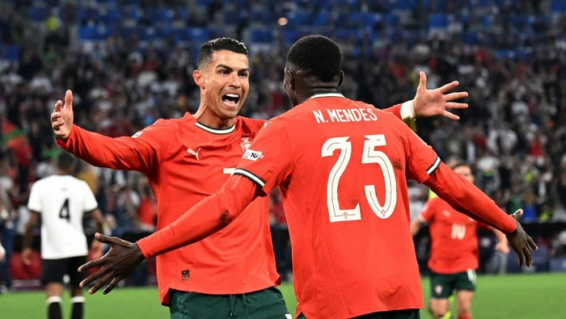
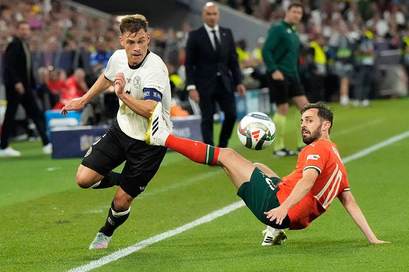

Jerman Vs Portugal: Menang 2-1, Ronaldo Cs ke Final UEFA Nations League

CR7 Dengan Nuno Mendes Selebrasi bersama
Portugal berhasil mengamankan kemenangan krusial dengan skor 2-1 atas Jerman dalam laga semifinal UEFA Nations League 2024/2025 yang sangat dinanti. Cristiano Ronaldo menjadi pahlawan dengan mencetak gol penentu kemenangan Portugal di pertandingan ini.
Duel sengit antara dua tim raksasa sepak bola Eropa ini berlangsung pada Kamis, 5 Juni 2025, di Allianz Arena, Munich. Pertandingan ini menandai pertemuan perdana mereka di ajang UEFA Nations League musim ini.
Paruh pertama pertandingan sempat terkunci tanpa gol. Namun, Jerman berhasil mencuri keunggulan lebih dulu di awal babak kedua melalui aksi Florian Wirtz pada menit ke-48. Portugal dengan cepat membalikkan keadaan berkat dua gol kilat dari Francisco Conceicao (menit 63) dan Cristiano Ronaldo (menit 68).

Joshua Kimmich dari Jerman berjuang memperebutkan bola dengan Bernardo Silva dari Portugal di semifinal Nations League di Munich Football Arena
Meskipun Jerman berusaha keras menyamakan kedudukan di sisa waktu, skor 1-2 tetap bertahan hingga peluit panjang dibunyikan. Kemenangan ini secara otomatis mengantar Portugal melaju ke final UEFA Nations League 2024/2025, sementara Jerman harus tersingkir.
Pertandingan dimulai dengan penundaan sekitar 10 menit akibat hujan es lebat yang melanda Munich, memaksa para pemain kembali ke ruang ganti sebelum kick-off.
Babak pertama berjalan intens, di mana kedua tim sama-sama menciptakan peluang. Namun, pertahanan solid dan penampilan gemilang dari kedua kiper membuat skor tetap 0-0 saat jeda.
Jerman memecah kebuntuan pada menit ke-48. Florian Wirtz berhasil menyundul bola memanfaatkan umpan silang dari Joshua Kimmich, membangkitkan semangat tuan rumah di awal babak kedua.
Portugal kemudian menyamakan kedudukan pada menit ke-62 melalui tendangan jarak jauh yang spektakuler dari Francisco Conceicao, yang baru saja masuk sebagai pemain pengganti.
Gol ini mengubah momentum pertandingan secara drastis.
Hanya berselang enam menit kemudian, Cristiano Ronaldo memastikan kemenangan Portugal. Ia berhasil menyelesaikan umpan silang akurat dari Nuno Mendes, menandai gol internasional ke-137 dalam kariernya yang gemilang.
Jerman berusaha keras mengejar ketertinggalan dengan memasukkan Niclas Fullkrug dan Karim Adeyemi untuk meningkatkan daya gempur. Namun, lini pertahanan Portugal tetap kokoh menghadapi tekanan yang diberikan.
Pada menit ke-85, Karim Adeyemi nyaris menyamakan kedudukan, namun tendangannya membentur tiang gawang. Peluang emas ini menunjukkan betapa dekatnya Jerman dengan gol kedua.
Menjelang akhir pertandingan, ketegangan antara pemain kedua tim meningkat, berujung pada beberapa kartu kuning. Florian Wirtz, Niclas Fullkrug, dan Ruben Dias termasuk di antara pemain yang mendapatkan peringatan.
Kiper Jerman, Marc-Andre ter Stegen, melakukan penyelamatan ganda yang mengesankan pada menit ke-88, menjaga harapan timnya tetap hidup. Namun, upaya heroik tersebut tidak cukup untuk mencegah kekalahan.
Dengan kemenangan 2-1 ini, Portugal melaju ke final UEFA Nations League dan akan menghadapi pemenang dari laga antara Spanyol dan Prancis. Sementara itu, Jerman harus puas tersingkir di babak semifinal meskipun bermain di hadapan pendukung sendiri.